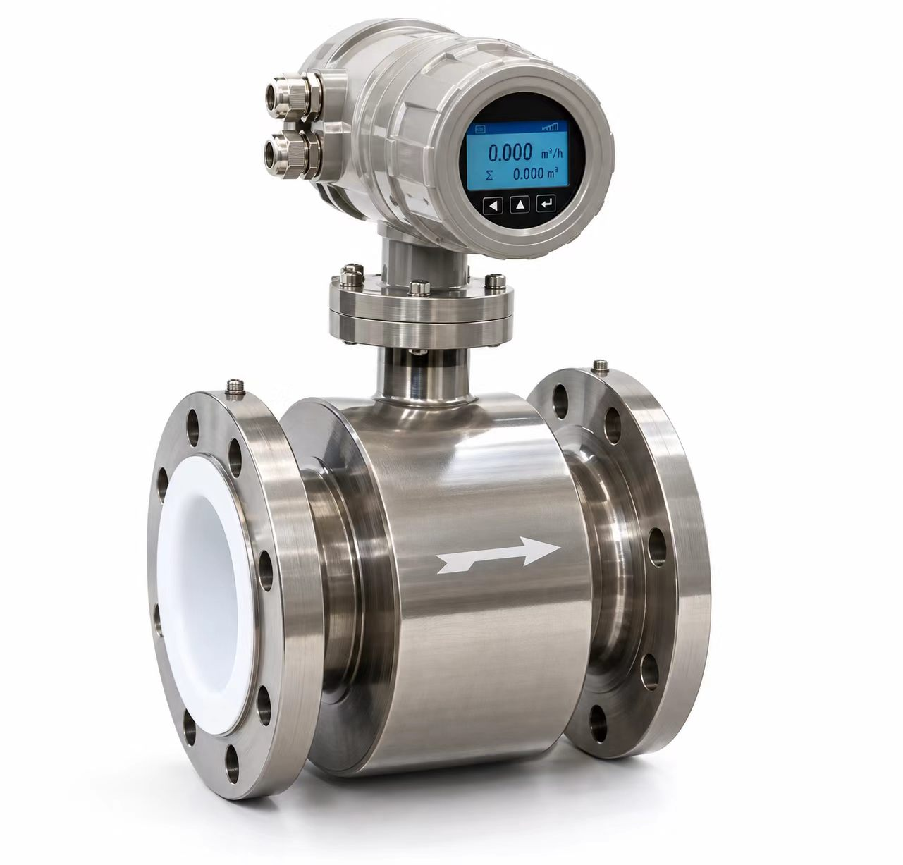

SKLD 电磁流量计
电磁感应测量导电液体流量，管路无压损，适用于污水、浆液与水工况。

流量仪表
SKLD 电磁流量计
电磁感应测量导电液体流量，管路无压损，适用于污水、浆液与水工况。
- 流道无遮挡、不产生压损
- 适用于含固体颗粒与气泡的浆液、污水
- 衬里与电极按介质腐蚀性匹配
- 4–20 mA（HART 可选）、RS485 / Modbus 输出
- 一体式与分体式两种结构可选
产品说明
中文技术内容
1. 应用场景：用于导电液体的流量计量与贸易结算，覆盖污水、泥浆、矿浆、酸碱溶液、自来水与原水等场合；因流道无遮挡、不产生压损，特别适合含固体颗粒、含气泡的浆液与污水；也用于有洁净度要求的工艺管线。
2. 测量原理：依据法拉第电磁感应定律。导电介质切割磁场产生与平均流速成正比的感应电势，经转换器放大、滤波与运算后换算为流量。
3. 公称通径范围：DN10–DN1200（按常规规格，待核实）。常规供货以 DN25–DN300 为主，较大口径按标准件配置。
4. 公称压力等级：常规 PN16 / PN25 / PN40（按常规规格，待核实）。
5. 测介质与工况：电导率约 ≥ 5 μS/cm 的导电液体；不适用于油品、纯油、蒸汽等不导电介质。常规工作温度 −10 ~ +120 ℃（按常规规格，待核实）。
6. 材质：衬里 聚四氟乙烯（PTFE）/ 氯丁橡胶 / 聚氨酯 / 软橡胶；电极 316L / 钼 / 钽 / 哈氏合金 C；法兰 碳钢或 316L；一体式防护 IP65，分体式传感器 IP68 + 转换器 IP65（按常规规格，待核实）。
7. 输出信号：4–20 mA（HART 可选）；RS485 / Modbus；脉冲与频率输出；继电器报警输出（均为可选或按型谱配置）。
8. 精度等级：常规 0.5 级（±0.5% 量程）；高精度变送器可提供 0.3 级 / 0.25 级 / 0.2 级选项（具体能力与型号对应关系待核实）。
9. 适用标准与认证：CE 认证（公司已有电磁流量计 CE 证书，证书编号与覆盖型号待核实）；ISO9001 质量管理体系认证（版本号待核实）。防爆标志与防爆合格证（待核实）。
10. 选型要点 / 用户常问 3 问
Q1：什么样的介质能测？必须是导电液体（电导率约 ≥ 5 μS/cm）；油、纯油、蒸汽等不导电介质不能测量。
Q2：衬里和电极怎么选？按介质腐蚀性匹配：强酸强碱选 PTFE 衬里配钽或哈氏合金 C 电极；污水、泥浆、矿浆选氯丁橡胶或聚氨酯衬里配 316L 电极。
Q3：需要电源吗？需要。一体式可直接取 220 V AC 或 24 V DC；分体式由传感器与转换器之间用专用信号电缆连接（常规标配 10 m，更长需单独订货，待核实）。
11. 询价引导语：请按您这个型号出一份报价。
典型应用行业
- 污水与泥浆处理
- 矿浆与冶金矿山
- 自来水与原水计量
- 酸碱溶液与化工流程
- 食品与洁净工艺管线
English Technical Details
1. Application: Flow measurement and custody transfer of conductive liquids, covering wastewater, sludge, mineral slurry, acid and alkali solutions, raw and potable water. Because the bore is unobstructed and there is no pressure loss, it is the natural choice for slurries and wastewater carrying solids or entrained gas, and for hygienic process lines.
2. Measuring principle: Faraday's law of electromagnetic induction. The conductive medium cutting the magnetic field generates an induced voltage proportional to the mean velocity; the transmitter amplifies, filters and processes this into a flow rate.
3. Nominal bore range: DN10–DN1200 (standard practice, to be verified). Standard supply is mainly DN25–DN300; larger sizes are built up from standard components.
4. Nominal pressure rating: Typically PN16 / PN25 / PN40 (standard practice, to be verified).
5. Measured medium and conditions: Conductive liquids of about 5 μS/cm conductivity or above; not applicable to oils, pure hydrocarbons, steam or other non-conductive media. Typical service −10 to +120 °C (standard practice, to be verified).
6. Materials: Liner in PTFE / chloroprene rubber / polyurethane / soft rubber; electrodes in 316L / molybdenum / tantalum / Hastelloy C; flanges in carbon steel or 316L; one-piece type to IP65, split type with sensor IP68 and transmitter IP65 (standard practice, to be verified).
7. Output signal: 4–20 mA, with HART optional; RS485 / Modbus; pulse and frequency output; relay alarm output — all selectable per the type code.
8. Accuracy: Standard class 0.5 (±0.5% of span); high-accuracy transmitters offer class 0.3 / 0.25 / 0.2 options (exact capability and model mapping to be verified).
9. Standards and certification: CE certification (the company holds a CE certificate for the electromagnetic flow meter; certificate number and covered models to be verified); ISO9001 quality management system certification (version on certificate to be verified). Explosion-proof marking and the explosion-proof certificate are to be verified.
10. Selection notes / three frequently asked questions
Q1: Which media can be measured? The medium must be conductive, about 5 μS/cm or above; oil, pure hydrocarbons and steam cannot be measured.
Q2: How do I choose the liner and electrodes? Match them to the medium: for strong acids and alkalis use a PTFE liner with tantalum or Hastelloy C electrodes; for wastewater, sludge and mineral slurry use a chloroprene or polyurethane liner with 316L electrodes.
Q3: Does it need power? Yes. A one-piece meter takes 220 V AC or 24 V DC directly; a split-type meter links sensor and transmitter with the dedicated signal cable, normally supplied with 10 m and ordered separately if longer (to be verified).
11. Enquiry wording: Request a quotation for this model.

相关产品